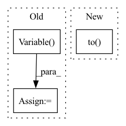

Pattern ID :28875
Before Change
model.zero_grad()
pred = model(
torch.autograd.Variable( batch) .to(device), lengths.cpu().numpy()
) //// perform forward pass
pred = torch.squeeze(pred)
loss = criterion(
pred.to(device), torch.autograd.Variable(targets.float()).to(device)
) //// compute loss
loss.backward() //// perform backward pass
optimizer.step() //// update weights
pred_val = pred >= 0.5 //// get predictions
y_true += list(targets.int().numpy()) //// accumulate targets from batch
y_pred += list(
pred_val.data.int().detach().cpu().numpy()
) //// accumulate preds from batch
total_loss += loss //// accumulate train lossAfter Change
model.zero_grad()
//// perform forward pass
pred = model(
sent1.to( device) ,
sent2.to(device),
sents1_len.to(device),
sents2_len.to(device),In pattern: SUPERPATTERN
Frequency: 4
Non-data size: 3
Instances Fragment ID: 84854542
Project Name: shahrukhx01/siamese-nn-semantic-text-similarity
Commit Name: f3d054dd14ef532c408b1306c3341115777ac22f
Time: 2021-12-30
Author: sk28671@gmail.com
File Name: siamese_sts/trainer/train.py
M Class Name: AnonimousClass
N Class Name: AnonimousClass
M Method Name: train_model(6)
N Method Name: train_model(6)
M Parent Class:
N Parent Class:
M File Name: siamese_sts/trainer/train.py
N File Name: siamese_sts/trainer/train.py
M Start Line: 16
M End Line: 47
N Start Line: 16
N End Line: 59
Before Change
) //// sorts the batch wrt the length of sequences
pred = model(
torch.autograd.Variable( batch) .to(device), lengths.cpu().numpy()
) //// perform forward pass
pred = torch.squeeze(pred)
loss = criterion(
pred.to(device), torch.autograd.Variable(targets.float()).to(device)
) //// compute loss
pred_val = pred >= 0.5 //// get predictions
y_true += list(targets.int())
y_pred += list(pred_val.data.int().detach().cpu().numpy())
total_loss += lossAfter Change
sent1.to(device),
sent2.to(device),
sents1_len.to(device),
sents2_len.to( device) ,
)
//// compute loss
loss = criterion( Fragment ID: 84854543
Project Name: shahrukhx01/siamese-nn-semantic-text-similarity
Commit Name: f3d054dd14ef532c408b1306c3341115777ac22f
Time: 2021-12-30
Author: sk28671@gmail.com
File Name: siamese_sts/trainer/train.py
M Class Name: AnonimousClass
N Class Name: AnonimousClass
M Method Name: evaluate_dev_set(5)
N Method Name: evaluate_dev_set(5)
M Parent Class:
N Parent Class:
M File Name: siamese_sts/trainer/train.py
N File Name: siamese_sts/trainer/train.py
M Start Line: 78
M End Line: 95
N Start Line: 91
N End Line: 116
Before Change
zs=R[:,1,0]*0
if use_gpu:
out_euler= torch.autograd.Variable( torch.zeros(batch,3).cuda(gpu_id))
else:
out_euler=torch.autograd.Variable(torch.zeros(batch,3))
out_euler[:,0]=x*(1-singular)+xs*singular
out_euler[:,1]=y*(1-singular)+ys*singularAfter Change
ys = torch.atan2(-R[:,2,0], sy)
zs = R[:,1,0]*0
out_euler = torch.autograd.Variable(torch.zeros(batch,3)).to( device)
out_euler[:,0] = x*(1-singular)+xs*singular
out_euler[:,1] = y*(1-singular)+ys*singular
out_euler[:,2] = z*(1-singular)+zs*singular
Fragment ID: 84854570
Project Name: thohemp/6drepnet
Commit Name: dee31598a11072c30b16454285441382a8cf27e4
Time: 2023-02-25
Author: mucun.wuxian@gmail.com
File Name: sixdrepnet/utils.py
M Class Name: AnonimousClass
N Class Name: AnonimousClass
M Method Name: compute_euler_angles_from_rotation_matrices(2)
N Method Name: compute_euler_angles_from_rotation_matrices(3)
M Parent Class:
N Parent Class:
M File Name: sixdrepnet/utils.py
N File Name: sixdrepnet/utils.py
M Start Line: 164
M End Line: 183
N Start Line: 160
N End Line: 175
Before Change
batch=v.shape[0]
v_mag = torch.sqrt(v.pow(2).sum(1))// batch
if use_gpu:
v_mag = torch.max(v_mag, torch.autograd.Variable( torch.FloatTensor([1e-8]).cuda(gpu_id)) )
else:
v_mag = torch.max(v_mag, torch.autograd.Variable(torch.FloatTensor([1e-8])))
v_mag = v_mag.view(batch,1).expand(batch,v.shape[1])After Change
def normalize_vector(v, device):
batch = v.shape[0]
v_mag = torch.sqrt(v.pow(2).sum(1))// batch
v_mag = torch.max(v_mag, torch.autograd.Variable(torch.FloatTensor([1e-8]))).to( device)
v_mag = v_mag.view(batch,1).expand(batch,v.shape[1])
v = v/v_mag
return v
Fragment ID: 84854530
Project Name: thohemp/6drepnet
Commit Name: dee31598a11072c30b16454285441382a8cf27e4
Time: 2023-02-25
Author: mucun.wuxian@gmail.com
File Name: sixdrepnet/utils.py
M Class Name: AnonimousClass
N Class Name: AnonimousClass
M Method Name: normalize_vector(2)
N Method Name: normalize_vector(3)
M Parent Class:
N Parent Class:
M File Name: sixdrepnet/utils.py
N File Name: sixdrepnet/utils.py
M Start Line: 118
M End Line: 125
N Start Line: 117
N End Line: 120